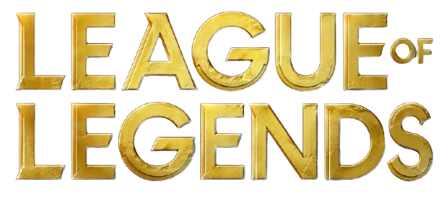
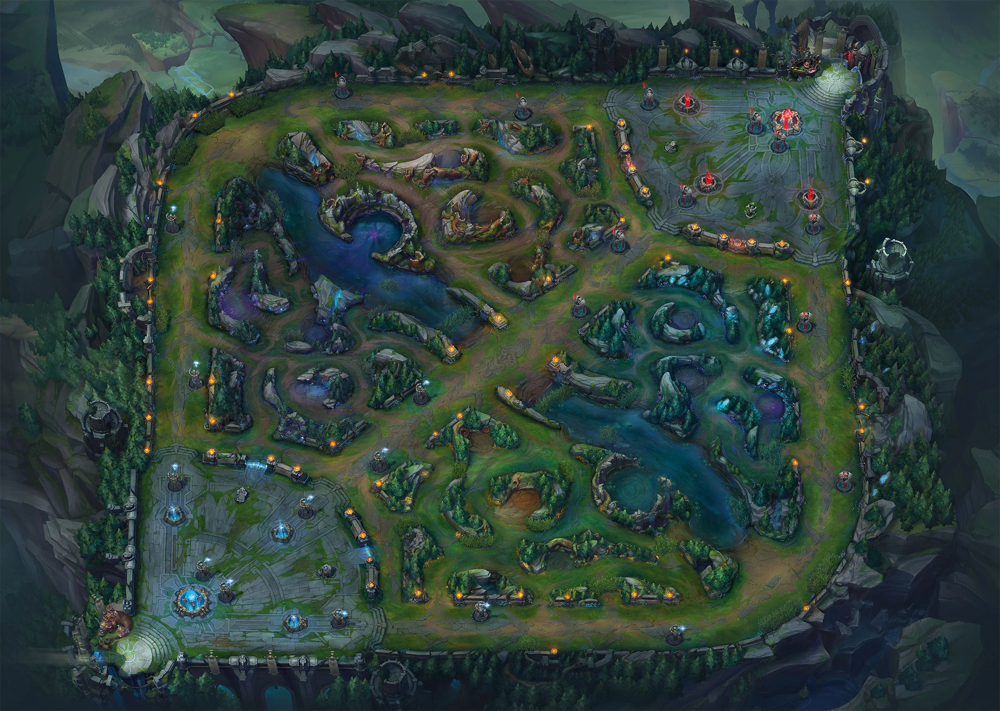
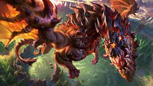
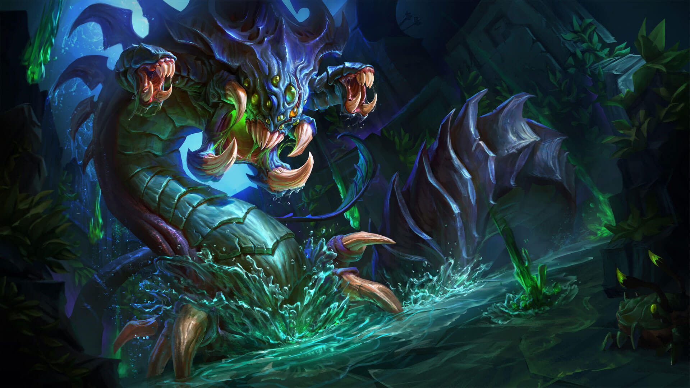
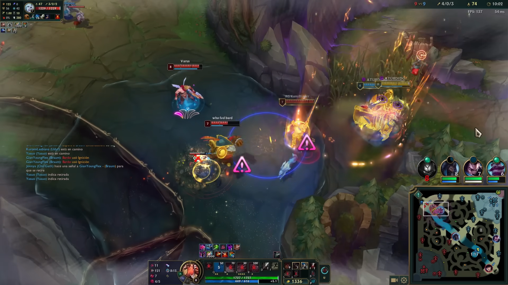
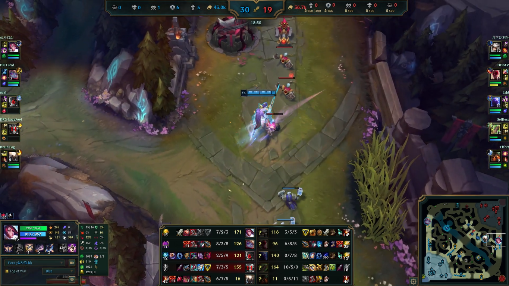

¿Que es el Macro?

El macro en League of Legends representa todas las decisiones estrategicas que un jugador toma durante la partida.
¿Por que es importante el macro?
El macro define como se desarrolla la partida mas alla de las mecanicas individuales.
Rotar correctamente, controlar vision y priorizar objetivos permite convertir ventajas en victorias.

Summoner's Rift esta dividido en tres lineas principales.
Control de Vision
La vision es una herramienta esencial en League of Legends.
Un equipo con mejor vision puede jugar mas seguro.

Los dragones otorgan mejoras permanentes.

El Baron Nashor ayuda a empujar lineas.
Adaptacion durante la partida
Cada partida obliga a cambiar la estrategia.
Adaptarse rapidamente es importante.

Las teamfights son momentos decisivos.

El splitpush genera presion constante.